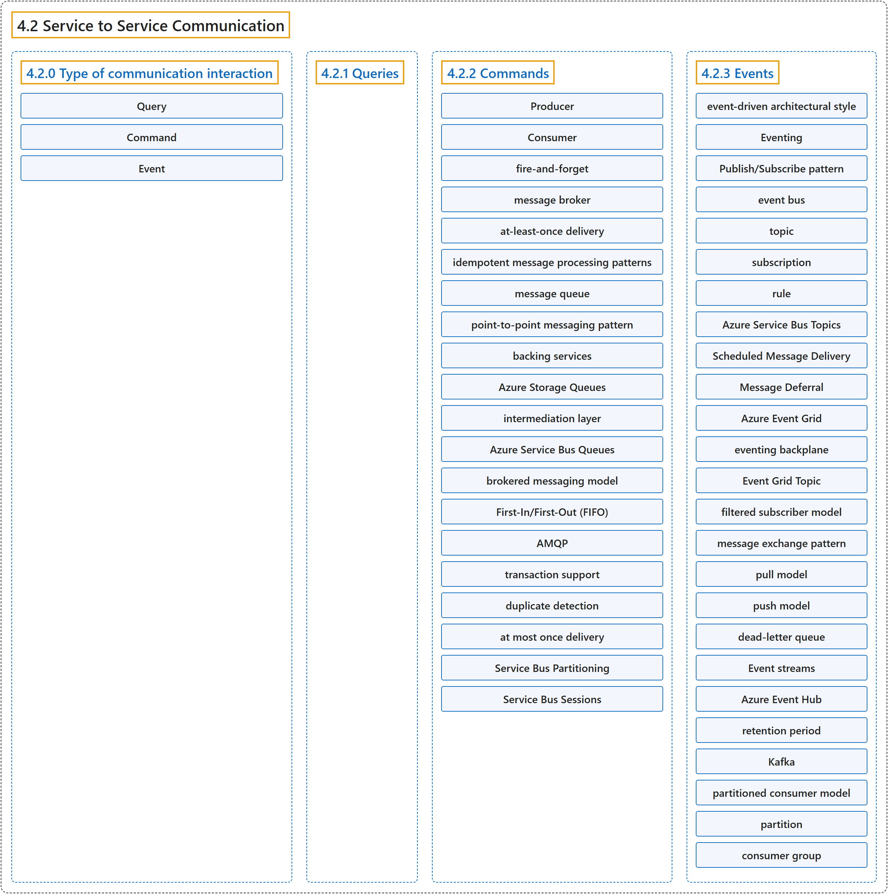

4.2 Service to Service Communication
Classification

Glossary
| Term | Definition | 中文翻译 | Source |
|---|---|---|---|
| 4.2 Service to Service Communication 服务间通信 |
"When constructing a cloud-native application, you'll want to be sensitive to how back-end services communicate with each other." | 构建云原生应用时，你需要留意后端服务之间如何通信。 | Microsoft, 2022, "Service-to-service communication", para. 2 |
| 4.2.0 Type of communication interaction 通信交互类型 |
"There are several widely accepted approaches to implementing cross-service communication. The type of communication interaction will often determine the best approach." | 实现跨服务通信有几种被广泛接受的方法。通信交互类型往往决定了最佳方法。 | Microsoft, 2022, "Service-to-service communication", para. 3 |
| Query 查询 |
"Query – when a calling microservice requires a response from a called microservice, such as, "Hey, give me the buyer information for a given customer Id."" | 查询：调用方微服务需要被调用的微服务返回响应时，例如“嘿，把某个客户 Id 的买家信息给我。” | Microsoft, 2022, "Service-to-service communication", para. 4, item 1 |
| Command 命令 |
"Command – when the calling microservice needs another microservice to execute an action but doesn't require a response, such as, "Hey, just ship this order."" | 命令：调用方微服务需要另一个微服务执行某个操作，但不需要响应时，例如“嘿，把这个订单发货就行。” | Microsoft, 2022, "Service-to-service communication", para. 4, item 2 |
| Event 事件 |
"Event – when a microservice, called the publisher, raises an event that state has changed or an action has occurred. Other microservices, called subscribers, who are interested, can react to the event appropriately. The publisher and the subscribers aren't aware of each other." | 事件：一个微服务，即发布者，发出事件，表明状态已改变或某个操作已发生。其他感兴趣的微服务，即订阅者，可以对该事件做出相应反应。发布者和订阅者彼此并不知道对方。 | Microsoft, 2022, "Service-to-service communication", para. 4, item 3 |
| 4.2.1 Queries 查询 |
(Definition pending) | （定义待补） | Microsoft, 2022, "Queries" |
| 4.2.2 Commands 命令 |
"Another type of communication interaction is a command. A microservice may need another microservice to perform an action." | 另一种通信交互类型是命令。一个微服务可能需要另一个微服务执行某个操作。 | Microsoft, 2022, "Commands", para. 1 |
| Producer 生产者 |
"In Figure 4-12, one microservice, called a Producer, sends a message to another microservice, the Consumer, commanding it to do something." | 在图 4-12 中，一个微服务，即生产者，向另一个微服务（消费者）发送消息，命令它做某件事。 | Microsoft, 2022, "Commands", para. 1 |
| Consumer 消费者 |
"In Figure 4-12, one microservice, called a Producer, sends a message to another microservice, the Consumer, commanding it to do something." | 在图 4-12 中，一个微服务（生产者）发送一条消息给另一个微服务，即消费者，命令它做某件事。 | Microsoft, 2022, "Commands", para. 1 |
| fire-and-forget 发后即忘 |
"Most often, the Producer doesn't require a response and can fire-and-forget the message." | 大多数情况下，生产者不需要响应，可以对消息发后即忘。 | Microsoft, 2022, "Commands", para. 2 |
| message broker 消息代理 |
"A command message is best sent asynchronously with a message queue. supported by a lightweight message broker." | 命令消息最好通过消息队列异步发送，由轻量级消息代理提供支持。 | Microsoft, 2022, "Commands", para. 2 |
| at-least-once delivery 至少一次投递 |
"As many message queues may dispatch the same message more than once, known as at-least-once delivery, the consumer must be able to identify and handle these scenarios correctly using the relevant idempotent message processing patterns." | 由于许多消息队列可能把同一条消息分发不止一次，这被称为至少一次投递，消费者必须能够使用相应的幂等消息处理模式，正确识别并处理这些情况。 | Microsoft, 2022, "Commands", para. 3 |
| idempotent message processing patterns 幂等消息处理模式 |
"As many message queues may dispatch the same message more than once, known as at-least-once delivery, the consumer must be able to identify and handle these scenarios correctly using the relevant idempotent message processing patterns." | 由于许多消息队列可能把同一条消息分发不止一次，这被称为至少一次投递，消费者必须能够识别并正确处理这些情况，方法是使用相应的幂等消息处理模式。 | Microsoft, 2022, "Commands", para. 3 |
| message queue 消息队列 |
"A message queue is an intermediary construct through which a producer and consumer pass a message." | 消息队列是一种中间结构，生产者和消费者通过它传递消息。 | Microsoft, 2022, "Commands", para. 4 |
| point-to-point messaging pattern 点对点消息传递模式 |
"Queues implement an asynchronous, point-to-point messaging pattern. The Producer knows where a command needs to be sent and routes appropriately. The queue guarantees that a message is processed by exactly one of the consumer instances that are reading from the channel." | 队列实现一种异步的点对点消息传递模式。生产者知道命令需要发到哪里，并相应地路由。队列保证一条消息只被正在读取该通道的消费者实例中的一个处理。 | Microsoft, 2022, "Commands", para. 4 |
| backing services 支撑服务 |
(context) "Backing services are ancillary resources upon which cloud-native systems depend. Message queues are backing services." | （语境）支撑服务是云原生系统所依赖的辅助资源。消息队列是支撑服务。 | Microsoft, 2022, "Commands", para. 5 |
| Azure Storage Queues Azure 存储队列 |
"Azure storage queues offer a simple queueing infrastructure that is fast, affordable, and backed by Azure storage accounts." | Azure 存储队列提供一种简单的排队基础设施，快速、实惠，并且以 Azure 存储账户为后盾。 | Microsoft, 2022, "Azure Storage Queues", para. 1 |
| intermediation layer 中间层 |
"Introduce an intermediation layer, or intermediate API, that exposes generic operations and encapsulates the concrete library." | 引入一个中间层，即中间 API，它公开通用操作并封装具体的库。 | Microsoft, 2022, "Azure Storage Queues", para. 7 |
| Azure Service Bus Queues Azure 服务总线队列 |
(context) "For more complex messaging requirements, consider Azure Service Bus queues." | （语境）对于更复杂的消息传递需求，可以考虑 Azure Service Bus 队列。 | Microsoft, 2022, "Azure Service Bus Queues", para. 1 |
| brokered messaging model 代理消息传递模型 |
"Sitting atop a robust message infrastructure, Azure Service Bus supports a brokered messaging model. Messages are reliably stored in a broker (the queue) until received by the consumer." | Azure Service Bus 建立在强大的消息基础设施之上，支持代理消息传递模型。消息被可靠地存储在代理中，也就是队列中，直到被消费者接收。 | Microsoft, 2022, "Azure Service Bus Queues", para. 2 |
| First-In/First-Out (FIFO) 先进先出 |
"The queue guarantees First-In/First-Out (FIFO) message delivery, respecting the order in which messages were added to the queue." | 队列保证先进先出（FIFO）的消息投递，遵循消息加入队列的顺序。 | Microsoft, 2022, "Azure Service Bus Queues", para. 2 |
| AMQP Advanced Message Queuing Protocol 高级消息队列协议 |
"AMQP is an open-standard across vendors that supports a binary protocol and higher degrees of reliability." | AMQP 是一个跨厂商的开放标准，支持二进制协议和更高的可靠性。 | Microsoft, 2022, "Azure Service Bus Queues", para. 3 |
| transaction support 事务支持 |
"Service Bus provides a rich set of features, including transaction support and a duplicate detection feature." | Service Bus 提供一组丰富的功能，包括事务支持和重复检测功能。 | Microsoft, 2022, "Azure Service Bus Queues", para. 4 |
| duplicate detection 重复检测 |
"Service Bus provides a rich set of features, including transaction support and a duplicate detection feature." | Service Bus 提供一组丰富的功能，包括事务支持和重复检测功能。 | Microsoft, 2022, "Azure Service Bus Queues", para. 4 |
| at most once delivery 至多一次投递 |
"The queue guarantees "at most once delivery" per message. It automatically discards a message that has already been sent." | 队列对每条消息保证至多一次投递。它会自动丢弃已经发送过的消息。 | Microsoft, 2022, "Azure Service Bus Queues", para. 4 |
| Service Bus Partitioning Service Bus 分区 |
"But, Service Bus Partitioning spreads the queue across multiple message brokers and message stores." | 但是，Service Bus 分区会把队列分散到多个消息代理和消息存储上。 | Microsoft, 2022, "Azure Service Bus Queues", para. 5 |
| Service Bus Sessions Service Bus 会话 |
"Service Bus Sessions provide a way to group-related messages." | Service Bus 会话提供一种把相关消息分组的方法。 | Microsoft, 2022, "Azure Service Bus Queues", para. 6 |
| 4.2.3 Events 事件 |
"To address this scenario, we move to the third type of message interaction, the event. One microservice announces that an action had occurred." | 为了解决这种情况，我们转向第三种消息交互类型：事件。一个微服务宣布某个操作已经发生。 | Microsoft, 2022, "Events", para. 2 |
| event-driven architectural style 事件驱动架构风格 |
"Other microservices, if interested, react to the action, or event. This is also known as the event-driven architectural style." | 其他微服务如果感兴趣，就会对该操作或事件做出反应。这也被称为事件驱动架构风格。 | Microsoft, 2022, "Events", para. 2 |
| Eventing 事件机制 |
"Eventing is a two-step process. For a given state change, a microservice publishes an event to a message broker, making it available to any other interested microservice. The interested microservice is notified by subscribing to the event in the message broker." | 事件机制是一个两步过程。对于某个状态变化，一个微服务把事件发布到消息代理，使任何其他感兴趣的微服务都能获取它。感兴趣的微服务通过在消息代理中订阅该事件来获得通知。 | Microsoft, 2022, "Events", para. 3 |
| Publish/Subscribe pattern 发布/订阅模式 |
"You use the Publish/Subscribe pattern to implement event-based communication." | 你使用发布/订阅模式来实现基于事件的通信。 | Microsoft, 2022, "Events", para. 3 |
| event bus 事件总线 |
"Note the event bus component that sits in the middle of the communication channel. It's a custom class that encapsulates the message broker and decouples it from the underlying application." | 注意位于通信通道中间的事件总线组件。它是一个封装消息代理的自定义类，并把消息代理与底层应用解耦。 | Microsoft, 2022, "Events", para. 5 |
| topic 主题 |
"With eventing, we move from queuing technology to topics. A topic is similar to a queue, but supports a one-to-many messaging pattern." | 有了事件机制，我们就从排队技术转向主题。主题与队列类似，但支持一对多的消息传递模式。 | Microsoft, 2022, "Events", para. 6 |
| subscription 订阅 |
"At the end, subscribers receive messages from subscriptions. In the middle, the topic forwards messages to subscriptions based on a set of rules, shown in dark blue boxes." | 在末端，订阅者从订阅接收消息。在中间，主题根据一组规则把消息转发到各个订阅，规则显示为深蓝色方框。 | Microsoft, 2022, "Events", para. 7 |
| rule 规则 |
"Rules act as a filter that forward specific messages to a subscription." | 规则充当把特定消息转发到某个订阅的过滤器。 | Microsoft, 2022, "Events", para. 7 |
| Azure Service Bus Topics Azure 服务总线主题 |
"Sitting on top of the same robust brokered message model of Azure Service Bus queues are Azure Service Bus Topics. A topic can receive messages from multiple independent publishers and send messages to up to 2,000 subscribers." | 建立在与 Azure Service Bus 队列相同的强大代理消息模型之上的是 Azure Service Bus 主题。一个主题可以接收来自多个独立发布者的消息，并把消息发送给最多 2,000 个订阅者。 | Microsoft, 2022, "Azure Service Bus Topics", para. 1 |
| Scheduled Message Delivery 计划消息投递 |
"Scheduled Message Delivery tags a message with a specific time for processing." | 计划消息投递为消息标记一个特定的处理时间。 | Microsoft, 2022, "Azure Service Bus Topics", para. 3 |
| Message Deferral 消息延迟 |
"Message Deferral enables you to defer a retrieval of a message to a later time." | 消息延迟让你可以把消息的获取推迟到以后。 | Microsoft, 2022, "Azure Service Bus Topics", para. 3 |
| Azure Event Grid Azure 事件网格 |
"At first glance, Event Grid may look like just another topic-based messaging system. However, it's different in many ways. Focused on event-driven workloads, it enables real-time event processing, deep Azure integration, and an open-platform - all on serverless infrastructure." | 乍一看，Event Grid 可能像是又一个基于主题的消息传递系统。但它在很多方面都不同。它专注于事件驱动的工作负载，在无服务器基础设施上提供实时事件处理、深度 Azure 集成和开放平台。 | Microsoft, 2022, "Azure Event Grid", para. 2 |
| eventing backplane 事件底板 |
"As a centralized eventing backplane, or pipe, Event Grid reacts to events inside Azure resources and from your own services." | 作为集中式的事件底板，也就是管道，Event Grid 对 Azure 资源内部的事件做出反应，也对你自己服务中的事件做出反应。 | Microsoft, 2022, "Azure Event Grid", para. 3 |
| Event Grid Topic Event Grid 主题 |
"Event notifications are published to an Event Grid Topic, which, in turn, routes each event to a subscription." | 事件通知被发布到 Event Grid 主题，主题再把每个事件路由到一个订阅。 | Microsoft, 2022, "Azure Event Grid", para. 4 |
| filtered subscriber model 过滤订阅者模型 |
"Like Service Bus, Event Grid supports a filtered subscriber model where a subscription sets rule for the events it wishes to receive." | 与 Service Bus 一样，Event Grid 支持过滤订阅者模型，其中订阅为它希望接收的事件设置规则。 | Microsoft, 2022, "Azure Event Grid", para. 4 |
| message exchange pattern 消息交换模式 |
"A major difference between EventGrid and Service Bus is the underlying message exchange pattern." | EventGrid 与 Service Bus 之间的一个主要区别是底层的消息交换模式。 | Microsoft, 2022, "Azure Event Grid", para. 7 |
| pull model 拉取模型 |
"Service Bus implements an older style pull model in which the downstream subscriber actively polls the topic subscription for new messages." | Service Bus 实现的是一种较老的拉取模型，其中下游订阅者主动轮询主题订阅以获取新消息。 | Microsoft, 2022, "Azure Event Grid", para. 8 |
| push model 推送模型 |
"It implements a push model in which events are sent to the EventHandlers as received, giving near real-time event delivery." | 它实现的是推送模型，其中事件一收到就被发送给事件处理程序，实现近乎实时的事件投递。 | Microsoft, 2022, "Azure Event Grid", para. 9 |
| dead-letter queue 死信队列 |
"Undelivered messages can be moved to a "dead-letter" queue for resolution." | 未投递的消息可以移到死信队列中等待处理。 | Microsoft, 2022, "Azure Event Grid", para. 10 |
| Event streams 事件流 |
"But, what if your cloud-native system needs to process a stream of related events? Event streams are more complex. They're typically time-ordered, interrelated, and must be processed as a group." | 但是，如果你的云原生系统需要处理一连串相关事件呢？事件流更复杂。它们通常按时间排序、彼此关联，并且必须作为一组来处理。 | Microsoft, 2022, "Streaming messages in the Azure cloud", para. 1 |
| Azure Event Hub Azure 事件中心 |
"Azure Event Hub is a data streaming platform and event ingestion service that collects, transforms, and stores events." | Azure Event Hub 是一个数据流平台和事件引入服务，用于收集、转换和存储事件。 | Microsoft, 2022, "Streaming messages in the Azure cloud", para. 2 |
| retention period 保留期 |
"Events stored in event hub are only deleted upon expiration of the retention period, which is one day by default, but configurable." | 事件中心里存储的事件只有在保留期到期时才会被删除，保留期默认为一天，但可以配置。 | Microsoft, 2022, "Streaming messages in the Azure cloud", para. 3 |
| Kafka Kafka |
(context) "It also supports Kafka 1.0. Existing Kafka applications can communicate with Event Hub using the Kafka protocol providing an alternative to managing large Kafka clusters." | （语境）它还支持 Kafka 1.0。现有的 Kafka 应用可以使用 Kafka 协议与 Event Hub 通信，从而不必管理大型 Kafka 集群。 | Microsoft, 2022, "Streaming messages in the Azure cloud", para. 4 |
| partitioned consumer model 分区消费者模型 |
"Event Hubs implements message streaming through a partitioned consumer model in which each consumer only reads a specific subset, or partition, of the message stream." | Event Hubs 通过分区消费者模型实现消息流式处理，在这种模型中，每个消费者只读取消息流的一个特定子集，即一个分区。 | Microsoft, 2022, "Streaming messages in the Azure cloud", para. 5 |
| partition 分区 |
"A partition is an ordered sequence of events that is held in an event hub." | 分区是一个有序的事件序列，保存在事件中心里。 | Microsoft, 2022, "Streaming messages in the Azure cloud", para. 5 |
| consumer group 使用者组 |
"Instead of reading from the same resource, each consumer group reads across a subset, or partition, of the message stream." | 每个使用者组不是从同一个资源读取，而是读取消息流的一个子集，即一个分区。 | Microsoft, 2022, "Streaming messages in the Azure cloud", para. 6 |
References
Microsoft. (2022, April 6). Service-to-service communication. Microsoft Learn. Retrieved November 11, 2026, from https://learn.microsoft.com/en-us/dotnet/architecture/cloud-native/service-to-service-communication